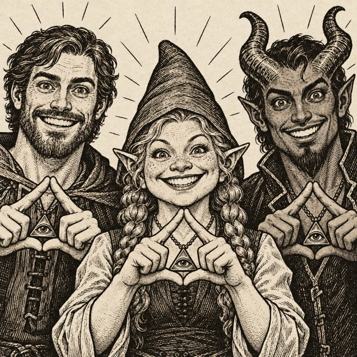
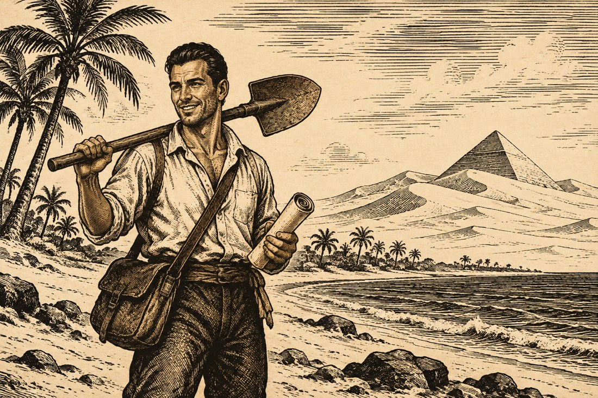
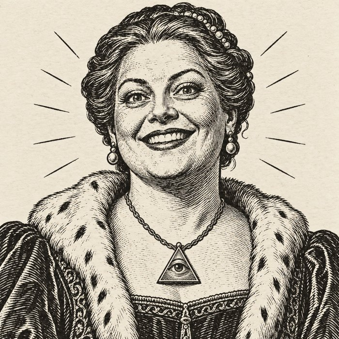
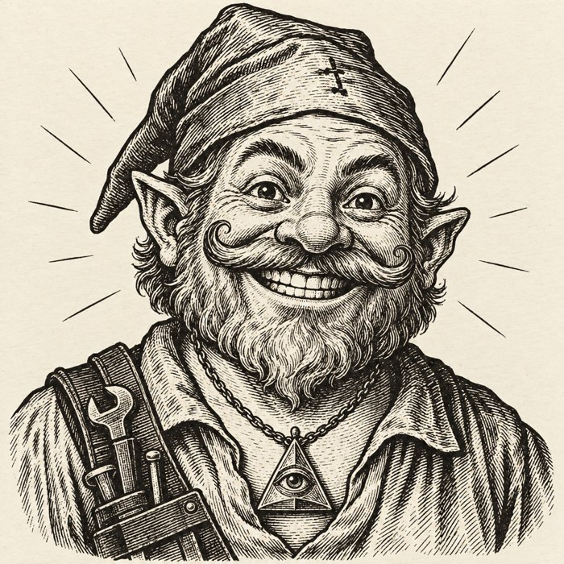
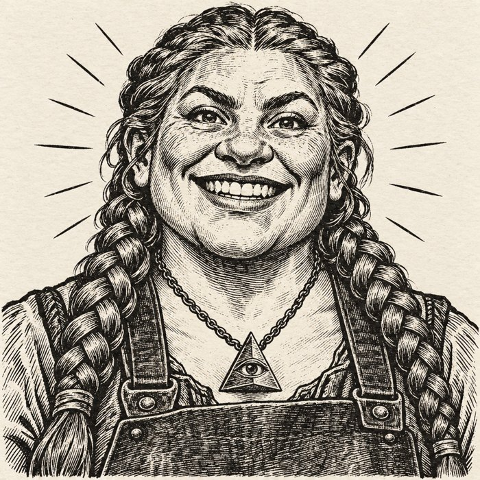
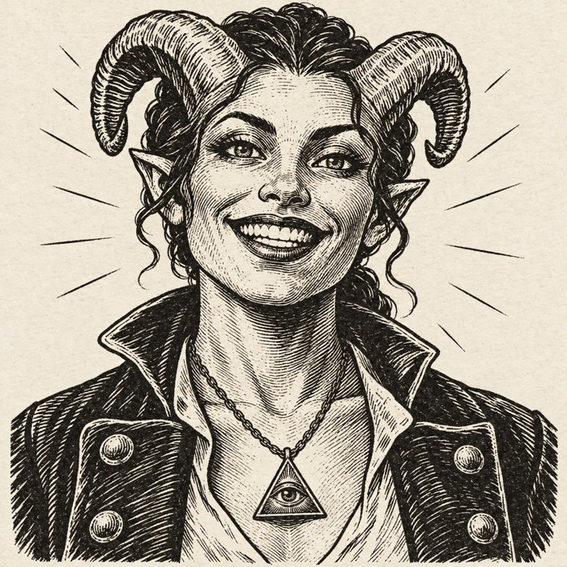
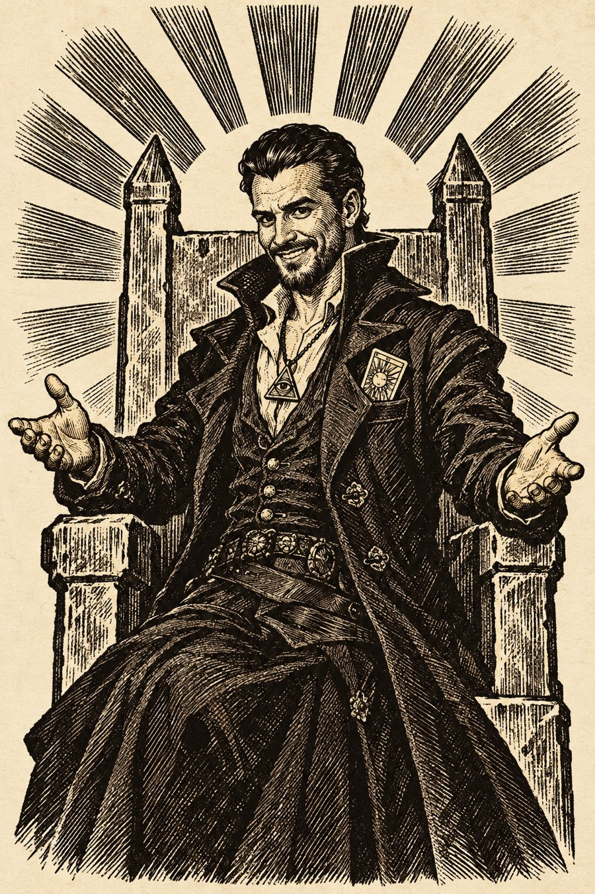

Your Captain has attained Lapis, and as a member of a Lapis Downline you are invited to REXOR for this year's Attain Your Horizon Retreat.
Very few Sellers in Faerun receive this invitation. Over two days you will train with the Program's most successful Sellers, grow closer to your Downline, and see the place where the Program began.
Please read this Orientation before you sail and bring it with you.
Rex Bedsheets
Founder of Rexium

At sunrise on Day Two, Rex Bedsheets will welcome a limited number of Sellers to breakfast on the steps of the Great Temple. Each guest is greeted by name and receives a signed copy of his Seven Sayings. Seats are 150 harlochs, reserved through your Captain before you sail.
Rex Bedsheets started his career like so many others. A child of a businessman with nothing to his name except a loan, a small forest, a moderately productive river valley and port, and a prayer.
When he lost everything due to a stroke of bad luck, he took like so many do to the adventurer's life, seeking fame and fortune far from the Imperial eye. On the island of the Endless Horizons, he sought the treasure often rumored to be buried by the great Amnish pharaohs of the ancient past.
It is here, on the island we now call REXOR, where he discovered the City of the Drowning Sun, and the primeval mysteries of his purpose were revealed. He discovered the secret of ultimate attainment, and the Charm of the All-Seeing, a symbol of the power of the mind when you apply yourself to your fullest potential.
With this new power in hand, Rex sought to bring that good fortune to all the peoples of Faerun, spreading the mutual benefit of the Program to every corner of the Empire.


I worried about everything before the Retreat. I honestly could not tell you now what any of it was.Dubya D. Fordee · Gold · Athkatla
The Program works the same way for every Seller, from the newest Copper to your Captain.
The Seller who sold you your Charm is your Upline. Every new Seller buys seven Charms, one to wear and six to sell, and pays for all seven that day. The full payment is 100 harlochs.
Buy 7 · Wear 1 · Sell 6
Your goal is to sell your six Charms to six new people. Each of them buys seven, pays for all seven immediately, and goes out to sell their own six. You and your six are a Seven, and everyone who joins beneath them is in your Downline.
Every payment is passed up the line. Each Seller it passes through keeps a portion as Tribute, which is how the Program rewards those who came before you and how it will reward you. What remains at the top goes into the Horizon Fund, which pays for the Charms, the Retreat and the work on the island. Your Captain can tell you the current portion.
Wear your Charm at all times, including when you sleep and bathe. Never lend, sell or hand it to another person, including other Sellers.
The Charm only benefits a person who has chosen to wear it, so never put one on someone who has not agreed.
It is normal for the Charm to feel warm, and normal to feel tired in your first months as your body adjusts to a more productive life. If your Charm ever feels cold, tell your Captain right away.
The Sellers who sell the most do not talk about the Charm. They ask people what they want from life and what is stopping them, and then they listen. Most people will tell you why they need the Program if you let them talk.
Some words help a new person say yes and others make them nervous. Learn the list on the map page.
The stone in your Charm shows your rank.
| Copper | Every new Seller starts here, as a Foundation Neophyte. |
| Silver | You have sold three of your six Charms. Silvers can attend Rexium Meetings in their city. |
| Gold | You have sold all six Charms and your Seven is complete. |
| Lapis Your Captain | Your Seven has brought at least twenty-one more into the Program. A Lapis is a Captain and is invited to the Retreat with their Seven. |
| Ruby | Given only at the Retreat, to the teams called forward at the Great Ascension Luau. |
| Obsidian | Obsidians work for Rex directly and are chosen by him. Rubies are told how. |
| Ivory | No Seller has attained Ivory. Rex says he will know the first when he sees them. |
As Sellers succeed, some people in their lives turn negative about the Program. We call them the Burdened. A Burdened person carries weights that tie them to the ground, such as fear, debt and old loyalties, and those weights hold back anyone still holding on to them.
The Burdened are full of doubt, and doubt makes a fog that hides a Seller from Him. This is why we say "That he may see us all."
The Burdened are most often a Seller's own family. Every Seller is asked to step away from family on taking the Charm, and those who have not rarely advance beyond Silver. Your Captain can help you make a Stepping Away plan.
I have not needed my spectacles since I made Silver. I still wear them, out of habit.Wytepersin · Gold · Waterdeep
You should attend the Attain Your Horizon Retreat with your Downline only. You may not bring any companions of any kind, including and especially relatives, friends, or employees of any kind. Come alone with those who have taken on the blessing of the Program, and we promise you will leave closer to each other than any other relationship in your lives.
REXOR is three days by boat from Amn. Your Captain arranges your passage.
| Day One, morning | Arrival, Welcome table, quarters |
| Day One | Trainings One, Two and Three |
| Day One, sunset | Training Four |
| Day Two, sunrise | Divine Solar Greeting and Premium Breakfast (ticket holders) |
| Day Two, morning | Training Five |
| Day Two, sunset | The Great Ascension Luau, with Rex Bedsheets |
Trust the Protocols
Every team must complete all five trainings to attend the Luau. The whole team passes or fails together. Tips are from Captains who have attended.
Each Seller tells the team about their life before the Program and the people who did not believe in them.
Tip Real names and real details get the most out of this training.
A Master Trainer leads an exercise on the bond between a Seller and their Charm. Sellers who do well may be taught a special technique.
Tip Reread the section on caring for your Charm.
Every Seller spends an afternoon helping the excavation crew. It is hard work and an honor. Rex dug here alone for years.
Tip Bring gloves and a hat. Anything you find belongs to Rex and goes to the foreman.
At sunset each team is taken inside the Great Pyramid for a test of courage and teamwork.
Tip Stay close and do what your Captain tells you. Not recommended for Sellers with a weak heart.
The last training is on the morning of Day Two. It is different every year and is not described in advance.
Tip Sleep well and come ready to give everything for your team.
My old Captain ascended at the last Retreat. She writes to me every month. It is always a lovely letter.Danish Stuzz · Silver · Baldur's Gate

| We say | We do not say |
|---|---|
| Tribute | fee, cut, tax |
| my Downline | my recruits |
| the Burdened | my family |
| Stepping Away | leaving |
| attained their Horizon | died |
| the Program | the scheme, the pyramid |

My husband said it was a waste of 100 harlochs. I do not have a husband now, and I have never slept better.Clogan Hamset · Gold · Mirabar
Wall of Remembrance. Beside the Welcome table, portraits of Sellers who attained their Horizon in the field or at earlier Retreats.
The Great Pyramid is closed to Sellers except during Training Four and for teams called at the Luau.
We went up as twelve, and I have never felt so close to eleven people.A Lapis Captain · Waterdeep


At moonrise Rex himself will come out onto the Temple steps to choose the finalist teams, who will go on with him to the Ascension.